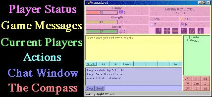
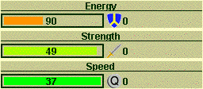
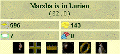
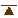
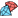
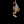
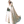

The Game Screen
The Phantasia Reimagined client displays a window broken into many parts.

Player Status - This player status provides all the information about the status of the characters. To make things easier, we'll discuss each side at a time.

The left side of the player status frame shows your characters energy, strength and speed stats. The percent of each compared to the maximum is displayed with a color bar, starting at green when at 100% and slowing turning to red at 20%. The actual number is displayed in the center of the bar.
To the left of each bar is equipment that modifies the stat: shield, sword and quicksilver. This equipment's adjustment is already incorporated into the bar. Each plus with this equipment adds directly to the character's stat.

The top of the right side provides character location information. Included is the character name, the name of the location and the coordinates of the character's present location.
Below this are pictures and values describing a character's more important stats. Here's a quick rundown of what the pictures mean.
- Mana

- Character Level- Gold

- Gems

/ - Cloak/ - Blessing
/ - Staff or Crown
/ - Palantir
/ - Ring
/

- VirginThe action buttons are used for most of the decisions in Phantasia Reimagined, so you'll be pushing them a lot. To make things easier, the numbers 1-8 on your keyboard can be used in place of are aliases for any of these buttons as long as the cursor is not in the input field in the chat area. The function keys will do the same thing and will work in the chat input field. You can also use the space bar to hit the left-most active button. These keyboard shortcuts are un-available in the 1.02 Java client.
The list of players on the right will tell you who is currently playing and give some basic information about them. A letter is used to designate the character race and a second may be used for characters that have attained special ranks. Race designations are M, F, E, D, H and X for Magic-User, Fighter, Elf, Dwarf, Halfling and Experimento. Rank designations are N, S, K, Q, C, V, X and W for kNight, Steward, King, Queen, Council of the Wise, Valar, Ex-Valar and Game Wizard.
The number to the right of these designations indicate the channel a character is in. Players can only hear and speak to other players who are in the same channel. Players start on channel 1, the newbie channel, but have the option to change this under the "Info" menu available while playing. Profanity is not permitted on channel 1 and speaking privileges may be taken away if this is abused.
Arrange your buttons
In the browser client you can put the eight action buttons wherever suits your play style. Click Arrange buttons above them, tap a button, then tap the place it should go (an empty place works too). Click Done when you're finished.
- Each character has its own layout, so your fighter can keep Melee up front while your magic-user keeps Spell there.
- Buttons are remembered by name, so a button you place stays there wherever it appears: put Melee or Spell first and it is first in every fight.
- The number keys 1 to 8 follow your layout.
- Reset layout puts the character's buttons back. Layouts are saved in your browser, so set them up once on each device you play on.